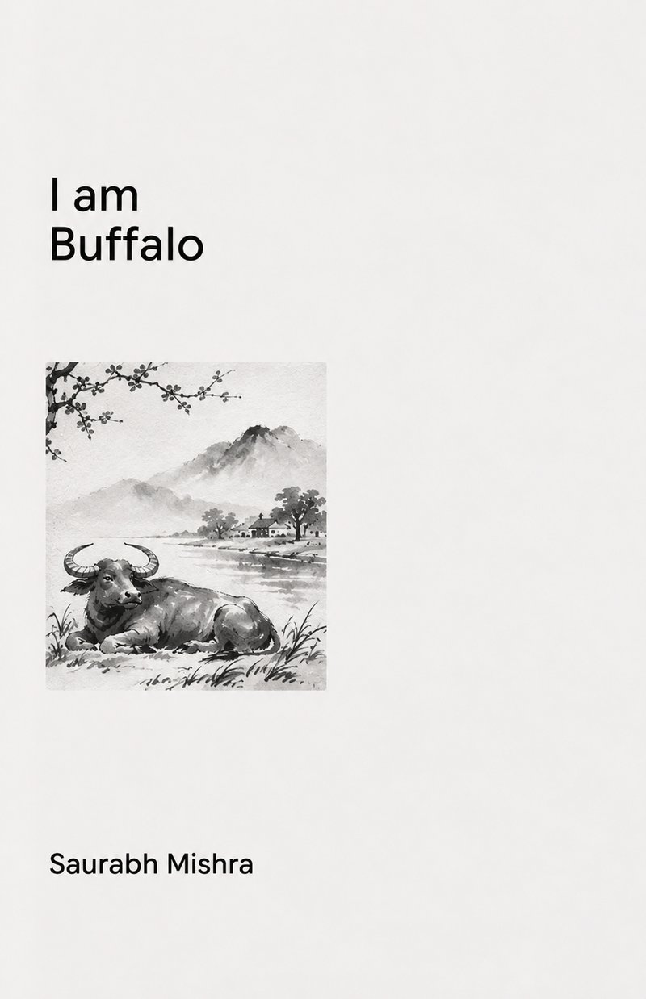

I Am Buffalo
a novel
Saurabh Mishra · 45 chapters · Kindle

I Am Buffalo begins at first-grey in a mud shed that smells of dung and straw and milk, and ends at a riverbank forty years later with four words a dying animal almost did not say.
Mehru is born into work. By four days old there is a rope through his nose, and the men who put it there are kind about it, which is somehow worse. He grows up watching things that do not make sense: an old ox who walks to the yoke uncalled and is glad; a boy who is loved and dies anyway; a stand of dead bamboo that makes music while the living bamboo beside it makes nothing at all.
He has no one to explain any of it. What he has instead is a river, a heron who stands in the shallows doing nothing with total competence, and Jugnu, a thin pale dog who belongs to no one, is good for nothing, and shows up at the water every evening to say something useless and funny. For twenty years that is the whole arrangement. It turns out to be the best thing in Mehru's life.
The third part of this book is dark. A friend dies on a hot afternoon, and the grief does not resolve in a chapter. It takes years. Mehru stops going to the river. He stops talking. The sun keeps coming up over the valley, enormous and beautiful and addressed to nobody, every single day, whether anyone is watching or not.
Told in the dry, loving voice of a crow who has outlived everyone in the story, I Am Buffalo is a novel about useful work and useless love, about the animals who teach us by refusing to teach, and about the one skill nobody can be taught: how to stand still in moving water and not be carried off.
Read Chapter One: The Bamboo at the Back of the Field
* * *
I was there for most of it, though I want to be honest with you at the start: I was there because of the flies. A buffalo shed at first-grey has more flies in it than anywhere else in the world, and they are slow in the cold, and a crow who gets up early eats well. I did not come for the child. I came for the flies, and I stayed.
The shed stood at the low end of the village where the land gave up and went down towards the water. It was mud and cow-dung plaster and a roof of palm thatch that had been meant to last two seasons and had lasted nine, and at that hour it held the warm sour smell of eleven animals breathing in a small space all night. Dung and straw and the milk smell, which is the sweetest smell there is and the one nobody writes down. Mehru knew all of it the way you know your own hand, which is to say he did not know it at all, because he had never once smelled anything else.
He was four days old and he already weighed more than the boy who would hold his head that morning, and he had no idea that this was unusual.
In the dark he could hear his mother before he could see her. Jhil chewed in her sleep, a slow grinding that stopped and started, and her breath came out of her in long warm pushes that he had learned to lie against. She was eleven years old and she had the body of something that had never been in a hurry. When he pressed his forehead into her flank he could feel her heart going somewhere down inside all that warmth, a long way in, unbothered.
Then the grey came.
It did not come like light. It came like something being taken away. The black between the roof poles stopped being black and became a thinner black, and then the colour of wet ash, and then you could see that the thatch had a shape, and after that it was no longer night and nobody had seen it happen.
* * *
The field behind the shed was stubble, cut and dry, and it crackled. Mist lay on it in a flat sheet about as high as his knees, so that the eleven of them going out across it looked like animals wading.
At the far end, where the land turned over and began to think about the river, there was a stand of bamboo. Some of it was green and living and some of it had died standing up years before and gone the pale grey of bone, still held in place by the ones around it, too tangled to fall. The dead ones had been got at by insects, drilled through with small round holes, and that is the thing about bamboo that nobody tells you: the green ones do not sing. The green ones only knock against each other, a dull wooden clatter. It is the dead ones that sing. The hollow ones. The ones full of holes.
Jhil walked into the middle of it and stopped and began to eat the grass at the base, and did not look up, and Mehru stood in the noise with his ears going in every direction trying to find where it was coming from.
"Who is doing it," said Mehru.
His mother went on eating for long enough that he thought she had not heard.
"The wind," she said.
"The wind isn't making any noise."
"No," she said.
"Then how is it doing it."
Jhil pulled up a mouthful and chewed it and swallowed it and shifted one back foot, and in the time she took he heard the three breathy notes happen again somewhere behind him, slightly differently.
"The wind doesn't have a throat," she said. "It uses whatever it finds."
He waited for the rest of it. There was no rest of it. She moved two steps to the left and started on a patch she liked better, and that was the end of the only lesson his mother ever gave him on purpose, and it took her eleven words.
* * *
By the white hour they had been brought back in, and the men came for Khoonta.
Khoonta was the oldest working animal in the village and he had a grey muzzle and a lump on his left shoulder where the yoke had sat for sixteen years. When the men came through the gate with the yoke across the boy's shoulders, Khoonta got up. Nobody had called him. He got up and he walked over to them and he put his head down into it, and when the boy was slow with the strap he made a short impatient sound and shifted his weight, the way you do when somebody is taking too long with a door you want to go through.
Mehru watched this with no understanding at all. He could see that the yoke was heavy. He could see the lump. He could also see, because it was not hidden and nobody was hiding it, that Khoonta was glad.
It was the first thing he had ever seen that did not make sense, and he had nothing to put it in. He was too young to even know it was a question. He turned away from it and went back to his mother and pushed his head into her side until she stood still for him and let him drink.
* * *
They came for him at the hottest part of the morning.
Afterwards he could not remember being frightened, and he thought about that for twenty years. There was no reason to be frightened. He had been handled every day of his life. There were three of them and he knew all three by smell, and one of them was the boy with the warm hands who scratched the place under his jaw that he could not reach, and that was the one who held his head.
They were kind about it. I want that written down, because people will not believe it. They were as kind about it as it is possible to be, and they were quick, and it was over in less time than it takes to tell you that it was over.
He did not remember the pain. That is the truth and it is strange and I have thought about it. What he remembered was the sound his mother made.
She did not bellow. A buffalo cow can make a noise that empties a shed, and she did not make it. What she made was lower than that and much shorter, one single sound down in her chest, and it stopped almost before it started, as though she had caught it and put it away. It was not a cry. It was not silence. It was the sound of a thing with a hole in it being gone through by something.
He spent the rest of his life trying to name it, and he was an old animal, and he never did.
* * *
In the afternoon they put him back out with his mother and he stood against her flank in the shade of the shed wall and she licked the blood off his face in long patient strokes until it was all gone, and neither of them said anything, and the day went on being beautiful.
Down at the back of the field the wind came through in the middle of the afternoon, the way it does, and the dead bamboo took it and made eleven or twelve different noises out of it, none of them in any order, none of them twice, and the green bamboo knocked against itself and made nothing much.
I was on the roof by then. I had eaten extremely well.
* * *
The next forty-four chapters are on Kindle. ₹299 on Amazon.in · $4.99 on Amazon.com · free with Kindle Unlimited.
Questions readers ask
What is I Am Buffalo about?
I Am Buffalo follows Mehru, a water buffalo born in a village shed, across forty-three years at one bend of one river. He works, he loses his mother, his calves, everyone he loves, and he is finally let go, worth nothing to anybody, which the book argues is the only freedom he was ever going to get. The story is narrated by a crow who has watched the whole village, and Mehru's whole life, from the roofline.
Who narrates I Am Buffalo?
A crow. He says plainly that he did not come for Mehru, he came for the flies, and stayed forty-three years. The crow's voice, dry, patient, occasionally very funny, carries the whole novel, watching a working animal's life from the roof of a village shed and the branches of a bamboo grove.
Is I Am Buffalo a children's book or a fable?
No. Despite the animal narrator and animal protagonist, this is literary fiction for adults: a slow, unsentimental novel about work, ownership, grief and freedom, set in a working Indian village over four and a half decades.
Who is I Am Buffalo for?
Readers of quiet, animal-narrated literary fiction, readers of contemporary Indian village fiction, and anyone drawn to novels about grief, labour and what freedom actually costs.
Where is I Am Buffalo set?
A single bend of a river in rural India, a buffalo shed, a stand of old bamboo at the back of a field, and the lane and well of the village around them, over a span of forty-three years.
How long is I Am Buffalo?
About 52,000 words across forty-five chapters. A full-length literary novel, readable in a handful of sittings.
Where can I buy I Am Buffalo?
On Amazon as a Kindle ebook, in India at amazon.in and worldwide at amazon.com. It is included in Kindle Unlimited.